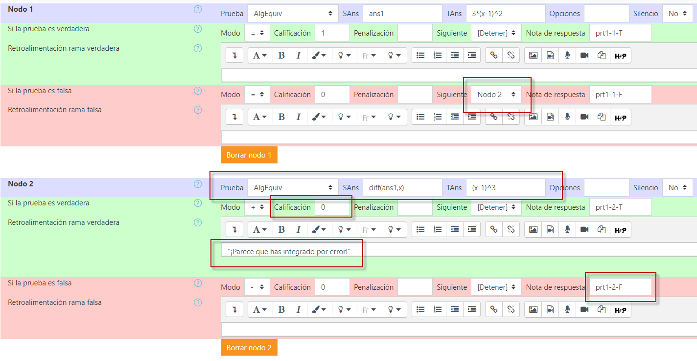
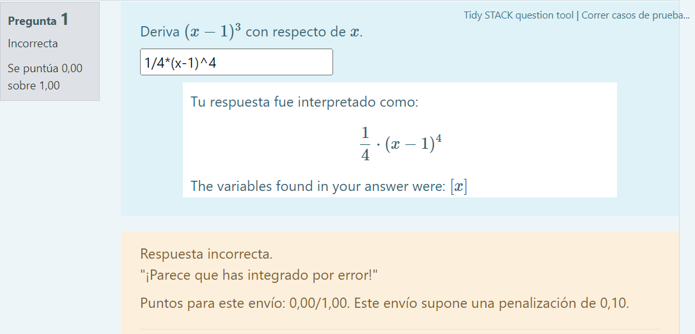
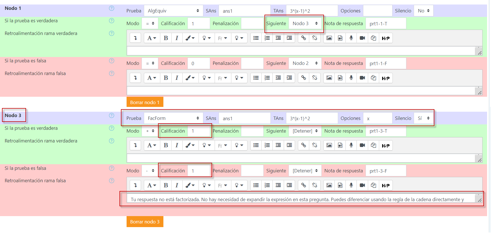
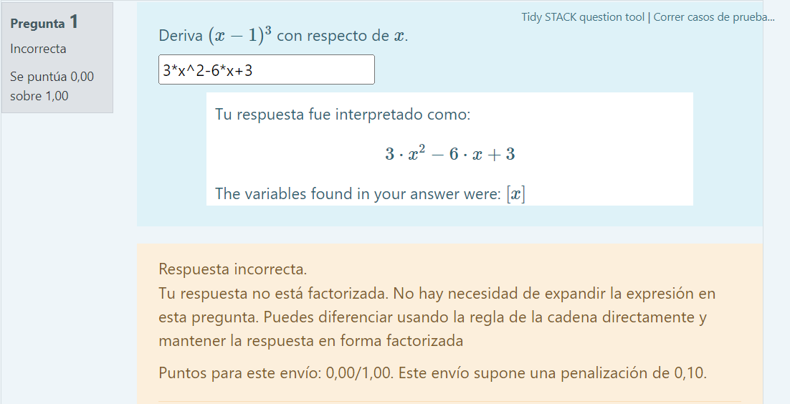
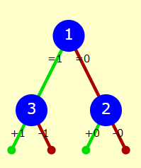

Cómo anticipar errores comunes
Supongamos que la respuesta ingresada por el estudiante fue falsa. A continuación, veremos cómo prever algunos de los errores más comúnes:
Ejemplo 1
Pensemos que nos gustaría verificar que no haya integrado por error. Podemos lograr esto agregando otro nodo de respuesta potencial.
Cierra la ventana de vista previa y edita la pregunta nuevamente. Desplázate hacia abajo hasta el "Árbol de respuestas potenciales" y haz clic en el botón , en la parte inferior de la lista de nodos.
Desde la rama falsa del Nodo 1, cambia el campo "Siguiente" para que esté configurado en Nodo 2. Si la primera prueba es falsa, entonces realizaremos la prueba en el Nodo 2.
Si el estudiante ha integrado, puede que haya agregado o no una constante de integración. ¡Si ha agregado tal constante, no sabemos qué letra ha usado! Por lo tanto, la mejor manera de resolver este problema es diferenciar su respuesta y compararla con la pregunta.
Actualiza el formulario para que el Nodo 2 tenga
- SAns = diff(ans1,x)
- TAns = (x-1)^3
- Prueba de respuesta = AlgEquiv
Esto nos da la prueba, ¿pero qué pasa con los resultados?
En la rama verdadera, establece la "Calificación" igual con 0. En la rama verdadera, establece la retroalimentación como "¡Parece que has integrado por error!". Observa aquí que STACK también agrega una "nota inteligente para sí mismo" en el campo de nota de respuesta. Esto es útil para agrupar estadísticamente resultados similares cuando la retroalimentación depende de preguntas generadas aleatoriamente y diferentes respuestas. De este modo, tienes una base sobre la cual agrupar respuestas. Esto se puede revisar en el rubro informe.

Presiona el botón y revisa la vista previa de la pregunta.

Ejemplo 2
Es común que los estudiantes den la respuesta correcta pero bajo un método no del todo apropiado. Por ejemplo, en vez de aplicar la regla de la cadena, pueden haber expandido el polinomio y, por lo tanto, dar la respuesta en forma no factorizada. En esta situación, podríamos querer proporcionar una retroalimentación alentadora para explicar al estudiante qué ha hecho mal.
Vuelve a "Agregar otro nodo" (después de todo, necesitamos aplicar otra prueba de respuesta para detectar esto).
Para usar esta respuesta potencial, edita el Nodo 1 y cambia la rama verdadera para que el siguiente nodo apunte al nuevo Nodo 3. Si ingresamos al Nodo 3, sabemos que el estudiante tiene la respuesta correcta. Solo necesitamos establecer si está factorizada o no. Para establecer esto, necesitamos usar pruebas de respuesta diferentes.
Actualiza el formulario para que el Nodo 3 tenga:
- SAns = ans1
- TAns = 3*(x-1)^2
- Prueba de respuesta = FacForm
- Opción de prueba\s = x
- Silencioso = Sí
La prueba de respuesta FacForm proporciona retroalimentación automáticamente, lo que sería inapropiado aquí. Solo necesitamos verificar si la respuesta está factorizada. Por lo tanto, elegimos la opción silenciosa. Necesitábamos agregar x a las "Opciones de prueba" para indicar qué variable estamos usando.
Ahora, necesitamos asignar resultados:
En la rama verdadera, establece la "Calificación" igual con 1. En la rama falsa, establece la "Calificación" igual con 1 (bueno, puedes estar en desacuerdo aquí, ¡pero eso depende de ti!). En la rama falsa, establece la retroalimentación como "Tu respuesta no está factorizada. No es necesario expandir la expresión en esta pregunta. Puedes diferenciar usando la regla de la cadena directamente y mantener la respuesta en forma factorizada.".

Esta nueva retroalimentación puede ser probada escribiendo una respuesta expandida, por ejemplo, 3*x^2-6x+3.

Luego de haber configurado la pregunta conforme a estos dos ejemplos, el árbol de respuestas debe verse así:
